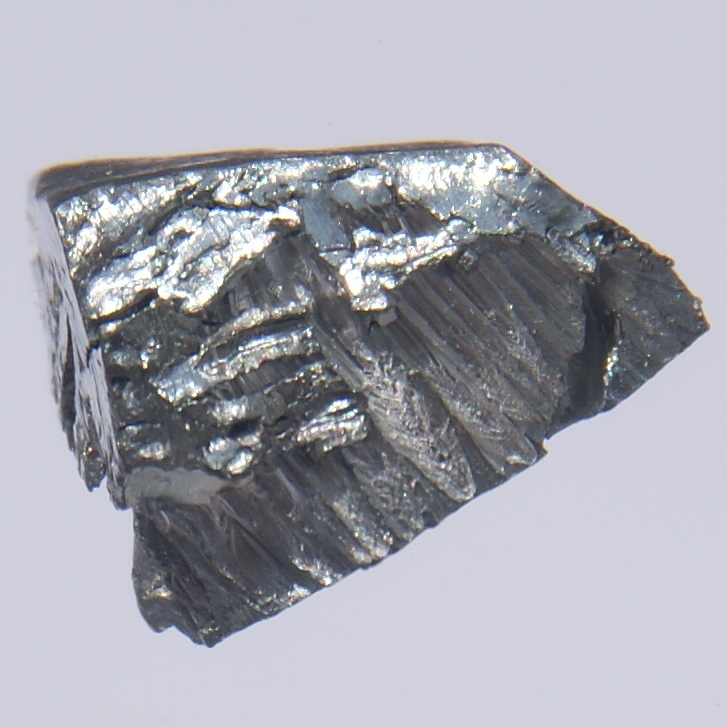

Лютеций
Люте́ций (химический символ — Lu, от лат. Lutetium) — химический элемент 3-й группы (по устаревшей классификации — побочной подгруппы третьей группы, IIIB) шестого периода периодической системы химических элементов Д. И. Менделеева, с атомным номером 71.Относится к семейству лантаноидов.Простое вещество лютеций — это плотный редкоземельный металл серебристо-белого цвета.

Элемент в виде оксида в 1907 году независимо друг от друга открыли французский химик Жорж Урбэн, австрийский минералог Карл Ауэр фон Вельсбах и американский химик Чарльз Джеймс. Все они обнаружили лютеций в виде примеси к оксиду иттербия, который, в свою очередь, был открыт в 1878 году как примесь к оксиду эрбия, выделенному в 1843 году из оксида иттрия, обнаруженного в 1797 году в минерале гадолините. Все эти редкоземельные элементы имеют очень близкие химические свойства. Приоритет открытия принадлежит Ж. Урбэну.
Лютеций получают при переработке смеси редкоземельных металлов (РЗЭ), выделенной из минералов. Лютеций отделяют от фракции тяжёлых РЗЭ методом экстракции и ионного обмена. Металл выделяют кальцийтермическим восстановлением трифторида LuF3. Оксид Lu2О3 используют как компонент жаропрочной керамики, LuF3 – для получения фторидных лазерных материалов.